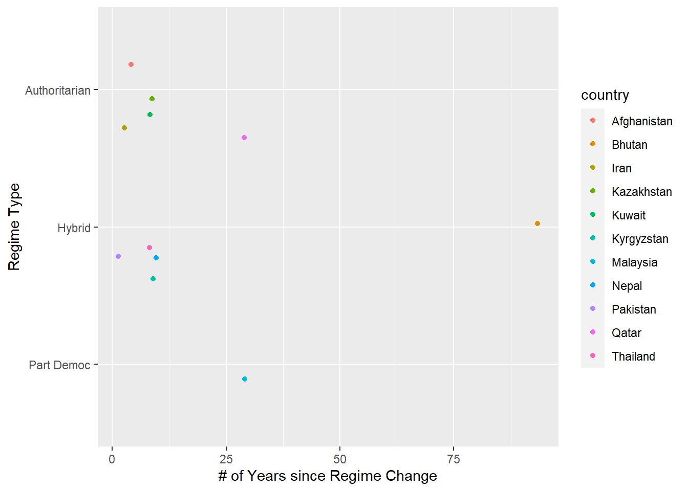
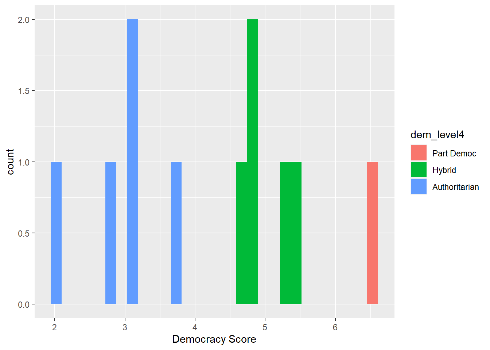

------------------------------------------------------------------------------
You have loaded plyr after dplyr - this is likely to cause problems.
If you need functions from both plyr and dplyr, please load plyr first, then dplyr:
library(plyr); library(dplyr)
------------------------------------------------------------------------------
Attaching package: 'plyr'
The following object is masked from 'package:purrr':
compact
The following objects are masked from 'package:dplyr':
arrange, count, desc, failwith, id, mutate, rename, summarise,
summarize
library(tidyr)library(scales)
Attaching package: 'scales'
The following object is masked from 'package:purrr':
discard
The following object is masked from 'package:readr':
col_factor
library(poliscidata)
Registered S3 method overwritten by 'gdata':
method from
reorder.factor gplots
Attaching package: 'poliscidata'
The following object is masked from 'package:plyr':
ddply
Introduction
I will be using the poliscidata package in R, and I will then use the ‘world’ data set. It’s relatively large so I will not describe in depth, but it has a difference in statistics and information in almost every country. Some of these variables include “confidence in government institutions” (designated confidence interval), “ethnic and linguistic factionalization” (frac_eth3), and “is this state’s government a democracy?” (democ_regime08).
Based on my undergrad thesis, which focused on ethno-religious violence in the Polish-Ukrainian borderlands, I’m going to focus on the following variables:
country,
regionun (UN region)
frac_eth3 (level of ethnic factionalization)
durable (# of years since last regime transition)
dem_level14 (regime type)
dem_score14 (democracy score, Economist 2014)
pr_sys (proportional representation in government, yes or no)
Some of the commonalities I found between incidents of ethno-religious violence in an ethnic borderland are as follows: (a) history of political suppression against one of the two dominant ethnicities/religions in the area, (b) each group has intense feelings of “rivalry,” jealousy, and resentment against the other, (c) although language and culture in ethnic borderlands can be similar (such as with Poles and Ukrainians), their social, religious, and political traditions/aspirations are more often than not incredibly different, (d) the victorious group restarts the cycle and enacts harsh and repressive policies against the loser. And in situations where groups need to compete for survival (such as in times of war or general political instability), these trends combine and result in the eruption of violence.
NOTE: If I had more time, I would love to transform this into a larger project in which I would use the info gathered here and see if ethno-religious violence actually erupted in the places that match my criteria on paper.
In the interest of time, I’m not going to go through all 167 countries included in this data set and randomly pick locations. In this case, I have chosen Asia, which in this data set, includes the Middle East, Central Asia (former Soviet states), the Caucasus, and Eastern/Southern Asia. Since there were quite a few ‘NA’ entries, I removed them.
data("gss")eth_rel_components <- world %>%select(country,regionun,frac_eth3,durable,dem_level4,dem_score14,pr_sys) %>%na.omit() %>%filter(regionun =="Asia") %>%print()
country regionun frac_eth3 durable dem_level4 dem_score14 pr_sys
1 Afghanistan Asia High 4 Authoritarian 2.77 No
2 Armenia Asia Low 2 Hybrid 4.13 No
3 Azerbaijan Asia Low 5 Authoritarian 2.83 No
4 Bahrain Asia Medium 25 Authoritarian 2.87 No
5 Bangladesh Asia Low 9 Hybrid 5.78 No
6 Bhutan Asia High 93 Hybrid 4.87 No
7 Cambodia Asia Low 2 Hybrid 4.78 Yes
8 China Asia Low 51 Authoritarian 3.00 No
9 Cyprus Asia Low 26 Part Democ 7.40 Yes
10 Georgia Asia Medium 0 Hybrid 5.82 No
11 India Asia Medium 50 Part Democ 7.92 No
12 Indonesia Asia High 1 Part Democ 6.95 Yes
13 Iran Asia High 3 Authoritarian 1.98 No
14 Iraq Asia Medium 76 Hybrid 4.23 Yes
15 Israel Asia Medium 52 Part Democ 7.63 Yes
16 Japan Asia Low 48 Full Democ 8.08 No
17 Jordan Asia Medium 11 Authoritarian 3.76 No
18 Kazakhstan Asia High 9 Authoritarian 3.17 No
19 Kuwait Asia High 8 Authoritarian 3.78 No
20 Kyrgyzstan Asia High 9 Hybrid 5.24 No
21 Laos Asia Medium 25 Authoritarian 2.21 No
22 Lebanon Asia Low 0 Hybrid 5.12 No
23 Malaysia Asia High 29 Part Democ 6.49 No
24 Mongolia Asia Medium 8 Part Democ 6.62 No
25 Nepal Asia High 10 Hybrid 4.77 No
26 Oman Asia Medium 43 Authoritarian 3.15 No
27 Pakistan Asia High 1 Hybrid 4.64 No
28 Philippines Asia Low 13 Part Democ 6.77 No
29 Qatar Asia High 29 Authoritarian 3.18 No
30 Saudi Arabia Asia Low 74 Authoritarian 1.82 No
31 Singapore Asia Medium 35 Part Democ 6.03 No
32 Sri Lanka Asia Medium 52 Hybrid 5.69 Yes
33 Syria Asia Medium 37 Authoritarian 1.74 No
34 Taiwan Asia Medium 8 Part Democ 7.65 No
35 Tajikistan Asia Medium 2 Authoritarian 2.37 No
36 Thailand Asia High 8 Hybrid 5.39 No
37 Turkey Asia Medium 17 Hybrid 5.12 Yes
38 Turkmenistan Asia Medium 9 Authoritarian 1.83 No
39 Uzbekistan Asia Medium 9 Authoritarian 2.45 No
40 Vietnam Asia Low 46 Authoritarian 3.41 No
Background Info and Data
Now I’m going to tidy the data in the following variables: frac_eth3 (level of ethnic factionalism), dem_score14 (democratic score via The Economist), and pr_sys (proportionally representative government). My goal is to narrow this information down so that I can see what countries fit the criteria I laid out in the intro: (1) High levels of ethnic factionalism/inter-ethnic competition and rivalry (2) Artificial democratic government or a hybrid/authoritarian regime (3) Relatively short time-span between regime changes (4) Whichever group is in power will ensure that the “rival” group does not have governmental representation according to their population numbers.
country regionun frac_eth3 durable dem_level4 dem_score14 pr_sys
1 Afghanistan Asia High 4 Authoritarian 2.77 No
2 Bhutan Asia High 93 Hybrid 4.87 No
3 Iran Asia High 3 Authoritarian 1.98 No
4 Kazakhstan Asia High 9 Authoritarian 3.17 No
5 Kuwait Asia High 8 Authoritarian 3.78 No
6 Kyrgyzstan Asia High 9 Hybrid 5.24 No
7 Malaysia Asia High 29 Part Democ 6.49 No
8 Nepal Asia High 10 Hybrid 4.77 No
9 Pakistan Asia High 1 Hybrid 4.64 No
10 Qatar Asia High 29 Authoritarian 3.18 No
11 Thailand Asia High 8 Hybrid 5.39 No
Now that the data set has been filtered down by design, I’m going to present some visuals to showcase different variables (both individual and in combination).
Visuals and Explanation
ggplot(eth_rel_components, aes(x=durable, y=dem_level4, color=country)) +geom_jitter() +xlab("# of Years since Regime Change") +ylab("Regime Type") %>%print()
$y
[1] "Regime Type"
attr(,"class")
[1] "labels"

Based on the information presented in this graph, it’s noteworthy that all except for 3 countries (Qatar, Malaysia, and Bhutan) have experienced a regime change in the past 10 years. Most of these countries (including Qatar, but excluding Kyrgyzstan, Thailand, Malaysia, and Bhutan) have authoritarian regimes. The only country that’s close to democracy is Malaysia and it’s a decent bit above “Part Democ” (Part Democracy). None of the countries included here - which have high ethnic factionalism, low democracy scores, and no proportional representation in government - are fully democratic. This graph, however, can be improved. I don’t think it needs the distinction of individual countries, and I think it’d be more succinct and clear if point color was determined by regime type instead.
ggplot(eth_rel_components, aes(x=durable, y=dem_score14, color=dem_level4)) +geom_point() +xlab("# of Years since Last Regime Change") +ylab("Democracy Score") %>%print()
Unlike the previous visualization, this one has a much wider distribution. However, this graph shows democracy score based on regime type. While the democracy score might be accurate - though it’s hard to find each country’s exact democracy score with the graph in this format - I do not believe the alignment of countries based so strictly on regime type is helpful at all. I would even go so far as to say the format of the y-axis is misleading. There isn’t a set framework for how regimes govern. Authoritarianism, for instance, is very much a spectrum rather than a set value. For example, there are heavily authoritarian states like Belarus and Russia, but then there are authoritarian-leaning countries like Poland and Hungary. They can all be classified as “authoritarian”, but they’re not equally so.
`stat_bin()` using `bins = 30`. Pick better value with `binwidth`.

This graph, admittedly, isn’t the best. I wanted each entry to have it’s own bar next to the previous, but it stacked the ones with the same democracy score on top of each other. It’s not the biggest deal since the y-axis is ‘count’ and that just represents the number of countries with a given democracy score rather than the score itself.
Just for comparison, I’m going to take out the geographic filter but keep the one where it filters out all entries with a ‘dem_score14’ value higher than 7 (the point at which regimes enter “democratic” territory).
eth_rel_general <- world %>%select(country,regionun,frac_eth3,durable,dem_level4,dem_score14,pr_sys) %>%na.omit() %>%filter(frac_eth3 =="High"& dem_score14 <7) %>%print()
country regionun frac_eth3 durable
1 Afghanistan Asia High 4
2 Angola Africa High 3
3 Benin Africa High 9
4 Bhutan Asia High 93
5 Bolivia Latin America/Caribbean High 18
6 Bosnia and Herzegovina Europe High 0
7 Burkina Faso Africa High 20
8 Cameroon Africa High 8
9 Central African Republic Africa High 7
10 Chad Africa High 8
11 Colombia Latin America/Caribbean High 43
12 Cote d'Ivoire Africa High 0
13 Djibouti Africa High 1
14 Ecuador Latin America/Caribbean High 0
15 Eritrea Africa High 7
16 Ethiopia Africa High 5
17 Gabon Africa High 9
18 Ghana Africa High 4
19 Guinea Africa High 5
20 Guinea-Bissau Africa High 0
21 Guyana Latin America/Caribbean High 8
22 Indonesia Asia High 1
23 Iran Asia High 3
24 Kazakhstan Asia High 9
25 Kenya Africa High 3
26 Kuwait Asia High 8
27 Kyrgyzstan Asia High 9
28 Liberia Africa High 3
29 Libya Africa High 49
30 Malawi Africa High 6
31 Malaysia Asia High 29
32 Mali Africa High 8
33 Mauritania Africa High 38
34 Mozambique Africa High 6
35 Namibia Africa High 10
36 Nepal Asia High 10
37 Niger Africa High 1
38 Nigeria Africa High 1
39 Pakistan Asia High 1
40 Peru Latin America/Caribbean High 0
41 Qatar Asia High 29
42 Senegal Africa High 0
43 Sierra Leone Africa High 0
44 Sudan Africa High 11
45 Tanzania Africa High 0
46 Thailand Asia High 8
47 Togo Africa High 7
48 Uganda Africa High 7
49 Zambia Africa High 4
dem_level4 dem_score14 pr_sys
1 Authoritarian 2.77 No
2 Authoritarian 3.35 Yes
3 Hybrid 5.65 Yes
4 Hybrid 4.87 No
5 Hybrid 5.79 No
6 Hybrid 4.78 Yes
7 Hybrid 4.09 Yes
8 Authoritarian 3.41 No
9 Authoritarian 1.49 No
10 Authoritarian 1.50 No
11 Part Democ 6.55 Yes
12 Authoritarian 3.53 No
13 Authoritarian 2.99 No
14 Hybrid 5.87 Yes
15 Authoritarian 2.44 No
16 Authoritarian 3.72 No
17 Authoritarian 3.76 No
18 Part Democ 6.33 No
19 Authoritarian 3.01 No
20 Authoritarian 1.93 Yes
21 Hybrid 5.91 Yes
22 Part Democ 6.95 Yes
23 Authoritarian 1.98 No
24 Authoritarian 3.17 No
25 Hybrid 5.13 No
26 Authoritarian 3.78 No
27 Hybrid 5.24 No
28 Hybrid 4.95 No
29 Authoritarian 3.80 No
30 Hybrid 5.66 No
31 Part Democ 6.49 No
32 Hybrid 5.79 No
33 Hybrid 4.17 No
34 Hybrid 4.66 Yes
35 Part Democ 6.24 Yes
36 Hybrid 4.77 No
37 Hybrid 4.02 No
38 Authoritarian 3.76 No
39 Hybrid 4.64 No
40 Part Democ 6.54 Yes
41 Authoritarian 3.18 No
42 Part Democ 6.15 No
43 Hybrid 4.56 Yes
44 Authoritarian 2.54 No
45 Hybrid 5.77 No
46 Hybrid 5.39 No
47 Authoritarian 3.45 No
48 Hybrid 5.22 No
49 Part Democ 6.39 No
I’m going to provide summary statistics for the original data set I used ‘eth_rel_components’, which is geographically specific to Asia (and has a filter to only include countries without proportional representation), and then the last one, ‘eth_rel_general’, which applies to all nations in all regions with proportional and non-proportional representation. Then I will discuss and compare them.
There is a sizable difference between the ‘durable_mean’ figures for ‘eth_rel_components’ and ‘eth_rel_general’; it’s a difference of 7.98516. However, the mean figures for ‘dem_score14_mean’ only have a 0.24436 difference. What does this mean? Well, for starters, it means that Asia in particular has longer lasting regimes/longer periods of time in between regime changes than the world overall. And the small difference between the mean figures for dem_score14 means that the global average democratic score is about the same as Asia specifically.
Furthermore, if you compare the minimum and maximum dem_score14 values for each data set, they only differ from each other by about 0.5.
min(eth_rel_general$dem_score14)
[1] 1.49
max(eth_rel_general$dem_score14)
[1] 6.95
min(eth_rel_components$durable)
[1] 1
max(eth_rel_components$durable)
[1] 93
The min and max values for ‘durable’, which kind of contradict the original mean calculations, are almost the exact same, except the min values are 1 off.
min(eth_rel_general$durable)
[1] 0
max(eth_rel_general$durable)
[1] 93
Conclusion
I started this project with the intention of measuring the criteria of ethno-religious violence that I picked up on while writing my thesis. I found the criteria and measured, but kind of as expected, I need more information to actually measure whether the countries that matched my criteria actually experience(d) eruptions of ethno-religious violence. I know certain countries in the data set have experienced ethnic/religious violence (Bangladesh, Bosnia, Cambodia, Kazakhstan, Uzbekistan, Ukraine, Vietnam) but this data set unfortunately doesn’t have a category for “experienced ethnic violence.” I would definitely be interested in pursuing this further and finding or making a dataset with the necessary information, I’m just not there yet skill-wise.
Bibliography
The Economist, The Intelligence Unit, “Democracy Index Report, 2014.” http://www.eiu.com/public/thankyou_download.aspx?activity=download&campaignid=Democracy0115